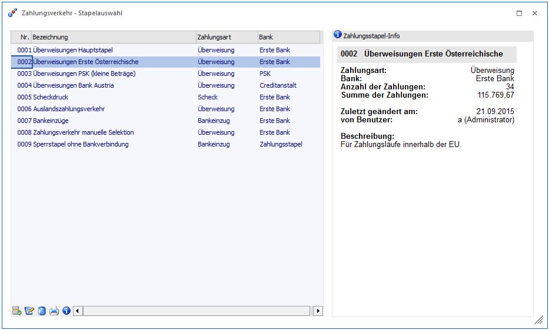
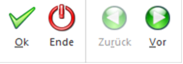
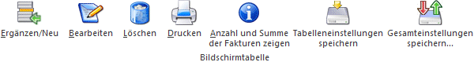
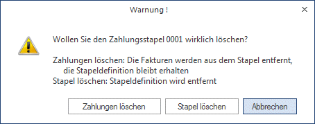
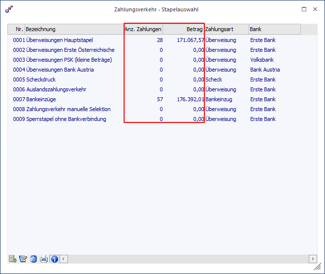
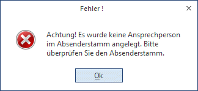

In der WinLine FIBU ist der Ausdruck von Überweisungsträgern, Schecks und Bankeinzügen sowie die Erstellung einer Ausgabedatei im Clearing-Format (V2-Format, V3-Format oder SEPA) möglich.
Seit 01.01.2002 gilt in Österreich nur mehr das V3-Format!
Die im automatischen Zahlungsverkehr durchgeführten Zahlungen können selbstverständlich auch automatisch gebucht werden (sofern bei Durchführung der Zahlungen die Option "sofort Buchen" oder "auf Stapel Buchen" angewählt ist).
Der Zahlungslauf besteht aus mehreren Schritten:
Als erstes können verschiedene Zahlungsstapel angelegt werden. Verschiedene Zahlungsstapel sind dann sinnvoll, wenn Sie z.B. Ihre automatischen Überweisungen von verschiedenen Hausbanken durchführen lassen wollen, oder einfach verschiedene Zahlungsarten realisieren möchten (Scheckdruck, Bankeinzug, Überweisungsdruck auf Formular, Überweisungen in Dateiformat, etc.). Mit jedem Stapel werden die gewünschten Parameter gespeichert.
Öffnen Sie den Menüpunkt
1 Buchen
1 Zahlungsverkehr
1 Zahlungsverkehr
oder Schnellaufruf
1 STRG + Z
Damit gelangen Sie in das Fenster "Zahlungsverkehr - Stapelauswahl".
Für den aktivierten Zahlungsstapel wird die Zahlungsstapel-Info am Bildschirm angezeigt.
Um einen Zahlungsstapel zu definieren, schreiben Sie einfach die gewünschte Stapelbezeichnung in die erste Zeile der Tabelle (im Feld "Bezeichnung").

Zur Bearbeitung der Stapel im Zahlungsverkehr gibt es mehrere Möglichkeiten:
Buttons

Ø OK
Mit dem OK-Button wird direkt in den Schritt "Ausgabe" gewechselt.
Ø Ende
Mit dem ENDE-Button wird der Menüpunkt "Zahlungsverkehr" beendet.
Ø Zurück / Vor
Mittels beiden Buttons kann durch einzelne Bereiche des Zahlungsverkehrs navigiert werden.
Tabellenbuttons

Ø Ergänzen/Neu
Damit gelangt man in die eigentliche Definition / Selektion des Zahlungsstapels.
Ø Bearbeiten (=Doppelklick auf den Zahlungsstapel)
Wurden noch keine Fakturen selektiert, gelangt man in die Selektionstabelle des Zahlungsstapels.
Wurden bereits Fakturen selektiert, wird das Fenster "Zahlungsverkehr - Selektion" geöffnet, in dem einzelne Konten/Fakturen zur Zahlung selektiert werden können.
Ø Löschen
Der Inhalt eines Stapels kann gelöscht werden. Mit einer zusätzlichen Abfrage kann entschieden werden, ob die Stapeldefinition erhalten bleiben oder der Stapel komplett gelöscht werden soll.

Ø Drucken
Es wird eine Liste aller angelegten Stapel ausgedruckt.
Ø Anzahl und Summe der Fakturen zeigen
Blendet die Spalten "Anzahl der Fakturen" und "Summe der Fakturen" ein.

Ø Tabelleneinstellungen speichern
Die Spalten einer Tabelle können grundsätzlich an beliebige Positionen verschoben, bzw. in der Breite entsprechend angepasst werden. Durch Anwahl des Buttons "Tabelleneinstellungen speichern" werden die Einstellungen benutzerspezifisch gespeichert und bei dem nächsten Aufruf des Programmpunktes wieder vorgeschlagen.
Ø Gesamteinstellungen speichern
Im Gegensatz zu "Tabelleneinstellungen speichern" können mit "Gesamteinstellungen speichern" mehrere Tabellenaufbauten gespeichert und nach Wunsch geladen werden. Zusätzlich werden Sonderfunktionen der Tabelle (z.B. "Spalte gruppieren") ebenfalls bei der Speicherung bedacht.
Achtung
Wurde unter
1 Stammdaten
1 Zahlungsstammdaten
1 Clearing-Absender
Noch kein Absenderstamm definiert, kann das Menü Zahlungsverkehr nicht geöffnet werden.
